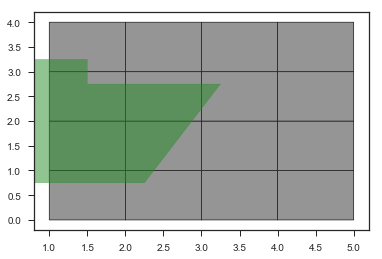
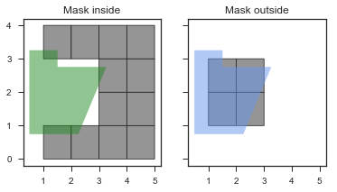
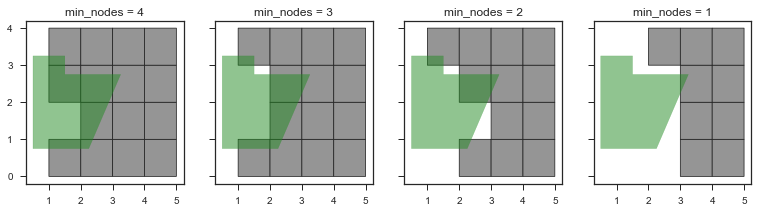
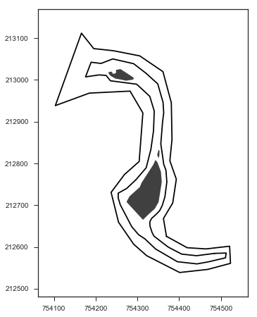
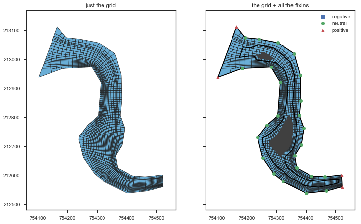
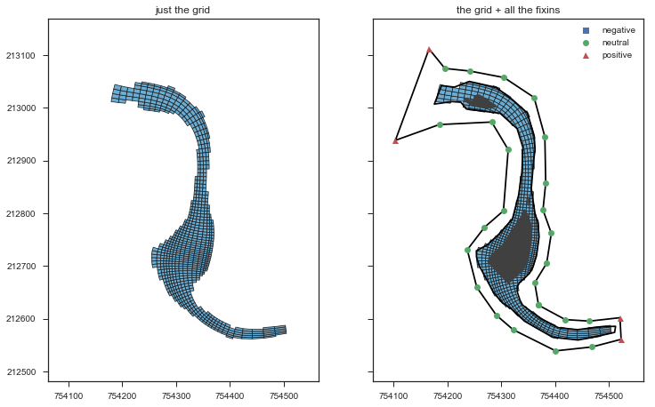
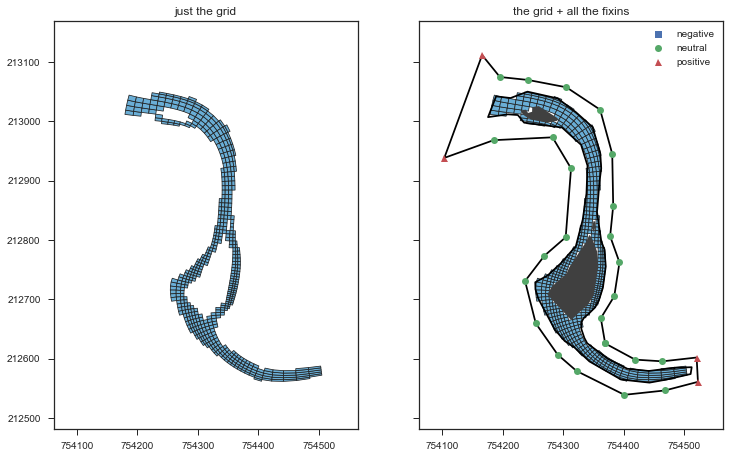
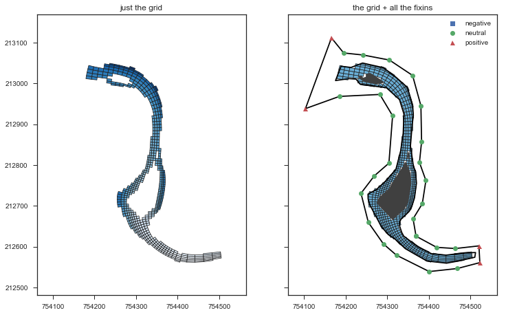

Masking grid cells¶
This tutorial will demonstrate the following:
- Basics of grid masking
- Reading boundary, river, and island data from shapefiles
- Generating a focused grid
- Masking land cells from the shapefiles
- Writing grid data to shapefiles
In [1]:
%matplotlib inline
import numpy as np
import matplotlib.pyplot as plt
import pandas
import seaborn
clear_bkgd = {'axes.facecolor':'none', 'figure.facecolor':'none'}
palette = seaborn.color_palette(palette='deep')
seaborn.set(style='ticks', context='notebook', rc=clear_bkgd)
import pygridgen as pgg
import pygridtools as pgt
def show_the_grid(g, colors=None):
fig, (ax1, ax2) = plt.subplots(figsize=(12, 7.5), ncols=2, sharex=True, sharey=True)
_ = g.plot_cells(ax=ax1, cell_kws=dict(cmap='Blues', colors=colors))
_ = g.plot_cells(
ax=ax2,
cell_kws=dict(cmap='Blues'),
domain_kws=dict(domain_x='x', domain_y='y', beta='beta'),
extent_kws=dict(extent_x='x', extent_y='y'),
island_kws=dict(islands_x='x', islands_y='y', islands_name='name')
)
_ = ax1.set_title('just the grid')
_ = ax2.set_title('the grid + all the fixins')
return fig
def make_fake_bathy(grid):
j_cells, i_cells = grid.cell_shape
y, x = np.mgrid[:j_cells, :i_cells]
z = (y - (j_cells // 2))** 2 - x
return z
Masking basics¶
Let’s consider a simple, orthogonal \(5\times5\) unit grid and a basic rectangle that we will use to mask some elements of the grid:
In [2]:
y, x = np.mgrid[:5, 1:6]
mg = pgt.ModelGrid(x, y)
mask_coords = [
(0.50, 3.25),
(1.50, 3.25),
(1.50, 2.75),
(3.25, 2.75),
(2.25, 0.75),
(0.50, 0.75),
]
fig, ax = plt.subplots()
fig, cells = mg.plot_cells(ax=ax)
mask_patch = plt.Polygon(mask_coords, color='forestgreen', alpha=0.5)
ax.add_patch(mask_patch)
Out[2]:
<matplotlib.patches.Polygon at 0x7f16623e3e10>

Applying the masks options¶
You have few options when applying a mask to a grid
inside=True- by default, elements inside the polygon are masked. Setting this parameter toFalsewill mask everything outside the polygon.min_nodes=3- This parameter configures how manx nodes of a cell must be inside a polygon to flag the whole cell as inside thet polygon.use_existing=True- When this isTruethe new mask determined from the passed polygons will be unioned (np.bitwise_or) with anx existing mask that may be present. When this isFalsethe old mask is completely overwritten with the new mask.
Masking inside vs outside a polygon¶
In [3]:
fig, (ax1, ax2) = plt.subplots(figsize=(6, 3), ncols=2, sharex=True, sharey=True)
common_opts = dict(use_existing=False)
# mask inside
_ = (
mg.mask_centroids(mask_coords, inside=True, **common_opts)
.plot_cells(ax=ax1)
)
ax1.add_patch(plt.Polygon(mask_coords, color='forestgreen', alpha=0.5))
ax1.set_title('Mask inside')
# mask outside
_ = (
mg.mask_centroids(mask_coords, inside=False, **common_opts)
.plot_cells(ax=ax2)
)
ax2.add_patch(plt.Polygon(mask_coords, color='cornflowerblue', alpha=0.5))
_ = ax2.set_title("Mask outside")

Masking with nodes instead of centroids¶
This time, we’ll mask with the nodes of the cells instead of the centroids. We’ll show four different masks, each generated with a different minimum number of nodes requires to classify a cell as inside the polygon.
In [4]:
fig, axes = plt.subplots(figsize=(13, 3),ncols=4, sharex=True, sharey=True)
common_opts = dict(use_existing=False, inside=True)
for ax, min_nodes in zip(axes.flat, [4, 3, 2, 1]):
# mask inside
_ = (
mg.mask_nodes(mask_coords, min_nodes=min_nodes, **common_opts)
.plot_cells(ax=ax)
)
ax.add_patch(plt.Polygon(mask_coords, color='forestgreen', alpha=0.5))
ax.set_title("min_nodes = {:d}".format(min_nodes))

Loading data from shapefiles via pygridtools.iotools¶
In [5]:
boundaryfile = "masking_data/input/GridBoundary.shp"
gridbounds = pgt.iotools.read_boundary(
boundaryfile,
sortcol='sort_order',
upperleftcol='upper_left'
)
riverfile = "masking_data/input/River.shp"
river = pgt.iotools.read_polygons(riverfile)
islandfile = "masking_data/input/Islands.shp"
island_arrays = pgt.iotools.read_polygons(islandfile)
islands = pandas.concat([
pandas.DataFrame({'x': arr[:, 0], 'y': arr[:, 1], 'name': n})
for n, arr in enumerate(island_arrays)
])
fig, ax = plt.subplots(figsize=(7.5, 7.5), subplot_kw={'aspect': 'equal'})
fig = pgt.viz.plot_domain(data=gridbounds, domain_x='x', domain_y='y', ax=ax)
fig = pgt.viz.plot_boundaries(ax=ax, engine='mpl', extent_x=river[:, 0], extent_y=river[:, 1],
islands=islands, islands_x='x', islands_y='y', islands_name='name')

Creating a Gridgen objects¶
In [6]:
# number of nodes in each dimension
i_nodes = 100
j_nodes = 20
# grid focus
focus = pgg.Focus()
# tighten the grid in the channels around the big island
focus.add_focus(5. / j_nodes, 'y', 4., extent=8./j_nodes)
focus.add_focus(14.5 / j_nodes, 'y', 4., extent=4./j_nodes)
# coarsen the grid upstream
focus.add_focus(98. / i_nodes, 'x', 0.25, extent=4./i_nodes)
# tighten the grid around the big island's bend
focus.add_focus(52. / i_nodes, 'x', 4., extent=20./i_nodes)
# generate the main grid
grid = pgt.make_grid(
domain=gridbounds,
ny=j_nodes,
nx=i_nodes,
ul_idx=17,
focus=focus,
rawgrid=False
)
Show the raw (unmasked) grid¶
In [7]:
grid.domain = gridbounds
grid.extent = pandas.DataFrame(river, columns=['x', 'y', 'z'])
grid.islands = islands
fig = show_the_grid(grid)

Mask out everything beyond the river banks¶
In [8]:
masked_river = grid.mask_centroids(river[:, :2], inside=False)
fig = show_the_grid(masked_river)

Loop through and mask out the islands¶
In [9]:
# inside the multiple islands
masked_river_islands = masked_river.copy()
for island in island_arrays:
masked_river_islands = masked_river_islands.mask_centroids(island[:, :2], inside=True)
fig = show_the_grid(masked_river_islands)

Plotting with e.g., bathymetry data¶
The key here is that you need an array that is the same shape as the centroids of your grid
In [10]:
fake_bathy = make_fake_bathy(masked_river_islands)
fig = show_the_grid(masked_river_islands, colors=fake_bathy)

Exporting the masked cells to a shapefile¶
In [11]:
masked_river_islands.to_gis('masking_data/output/ModelCells.shp',
usemask=True, which='grid', geom='Polygon')